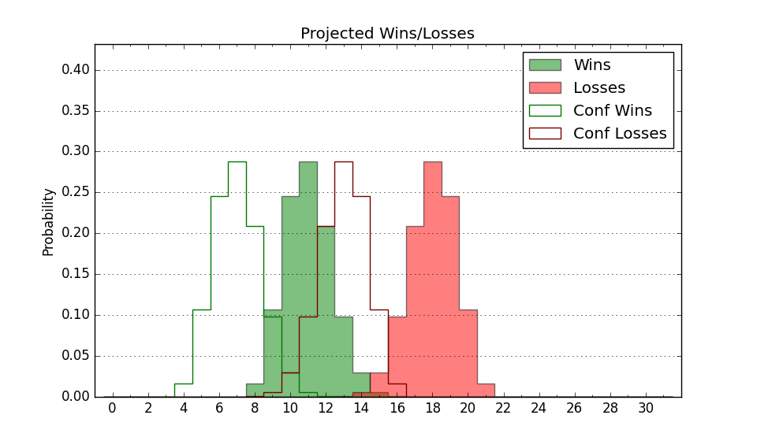

| Home | Game Probabilities | Conferences | Preseason Predictions | Odds Charts | NCAA Tournament |
| City: | Miami, Florida | |
| Conference: | Conference USA (7th)
| |
| Record: | 4-6 (Conf) 8-11 (Overall) | |
| Ratings: | Comp.: -7.7 (255th) Net: -7.4 (252nd) Off: 96.9 (271st) Def: 104.3 (228th) SoR: 0.0 (177th) |
| Remaining | ||||||
|---|---|---|---|---|---|---|
| Date | Opponent | Win Prob | Pred. | |||
| 1/28 | Middle Tennessee (111) | 32.1% | L 67-72 | |||
| 2/2 | @ Charlotte (93) | 9.9% | L 58-72 | |||
| 2/4 | @ UAB (83) | 8.8% | L 69-87 | |||
| 2/9 | Louisiana Tech (141) | 39.8% | L 71-74 | |||
| 2/11 | Rice (138) | 39.7% | L 77-80 | |||
| 2/18 | @ Middle Tennessee (111) | 12.2% | L 62-77 | |||
| 2/23 | UTEP (174) | 46.5% | L 65-66 | |||
| 2/25 | UTSA (313) | 76.7% | W 79-70 | |||
| 3/2 | @ Louisiana Tech (141) | 16.3% | L 66-78 | |||
| 3/4 | @ Rice (138) | 16.2% | L 72-85 | |||
| Previous | Game Score | |||||
| Date | Opponent | Win Prob | Result | Off | Def | Net |
| 11/7 | Houston Baptist (354) | 88.5% | W 77-66 | -12.1 | 6.1 | -6.0 |
| 11/15 | @North Carolina St. (49) | 5.4% | L 74-107 | 2.4 | -9.0 | -6.7 |
| 11/19 | Bryant (200) | 51.1% | L 85-91 | -5.8 | -0.6 | -6.4 |
| 11/23 | Stony Brook (320) | 77.8% | W 83-50 | 8.3 | 22.0 | 30.3 |
| 11/27 | Eastern Washington (133) | 38.9% | W 90-79 | 8.5 | 2.2 | 10.7 |
| 11/30 | Eastern Michigan (330) | 80.4% | L 68-80 | -18.5 | -14.5 | -33.0 |
| 12/4 | @Florida Gulf Coast (145) | 16.7% | L 65-74 | -0.8 | 1.8 | 0.9 |
| 12/13 | @Howard (253) | 34.9% | L 59-71 | -18.7 | 4.5 | -14.2 |
| 12/17 | @Florida Atlantic (28) | 3.7% | L 53-79 | -15.4 | 12.6 | -2.8 |
| 12/21 | Incarnate Word (347) | 85.0% | W 79-74 | 0.7 | -11.4 | -10.7 |
| 12/31 | @North Texas (65) | 6.7% | L 57-72 | 9.2 | -19.8 | -10.6 |
| 1/5 | Charlotte (93) | 27.2% | W 62-60 | 5.5 | 12.4 | 17.8 |
| 1/7 | UAB (83) | 24.6% | W 90-87 | 10.0 | 7.2 | 17.2 |
| 1/11 | Florida Atlantic (28) | 11.6% | L 73-77 | 5.9 | 7.3 | 13.2 |
| 1/14 | @Western Kentucky (185) | 21.4% | L 59-70 | -13.7 | 4.1 | -9.6 |
| 1/16 | North Texas (65) | 19.7% | L 57-64 | 3.7 | -3.0 | 0.7 |
| 1/19 | @UTEP (174) | 20.3% | L 61-81 | 7.3 | -21.7 | -14.4 |
| 1/21 | @UTSA (313) | 49.2% | W 77-72 | 11.9 | -2.6 | 9.3 |
| 1/26 | Western Kentucky (185) | 48.1% | W 78-69 | 15.0 | 0.6 | 15.6 |
| Stats & Trends | |||||
|---|---|---|---|---|---|
| Current | Day | Week | Month | Season | |
| Composite | -7.7 | -0.0 | +1.3 | +3.9 | +3.9 |
| Comp Rank | 255 | -1 | +11 | +42 | +53 |
| Net Efficiency | -7.4 | -0.0 | +1.3 | +4.2 | -- |
| Net Rank | 252 | -- | +8 | +39 | -- |
| Off Efficiency | 96.9 | +0.0 | +1.6 | +4.9 | -- |
| Off Rank | 271 | +1 | +21 | +47 | -- |
| Def Efficiency | 104.3 | -0.0 | -0.3 | -0.8 | -- |
| Def Rank | 228 | -- | -5 | -6 | -- |
| SoS Rank | 172 | +2 | -23 | +148 | -- |
| Exp. Wins | 11.0 | +0.0 | +1.3 | +2.5 | +1.6 |
| Exp. Conf Wins | 7.0 | +0.0 | +1.3 | +2.5 | +1.8 |
| Conf Champ Prob | 0.0 | -- | -- | -- | -0.0 |

| Advanced Stats | ||
|---|---|---|
| Stat | Value | Rank |
| Off Eff FG % | 0.517 | 128 |
| Off Ast Ratio | 0.136 | 224 |
| Off ORB% | 0.217 | 314 |
| Off TO Rate | 0.184 | 316 |
| Off FT Ratio | 0.260 | 318 |
| Def Eff FG % | 0.522 | 244 |
| Def Ast Ratio | 0.156 | 282 |
| Def ORB% | 0.341 | 349 |
| Def TO Rate | 0.188 | 38 |
| Def FT Ratio | 0.267 | 82 |